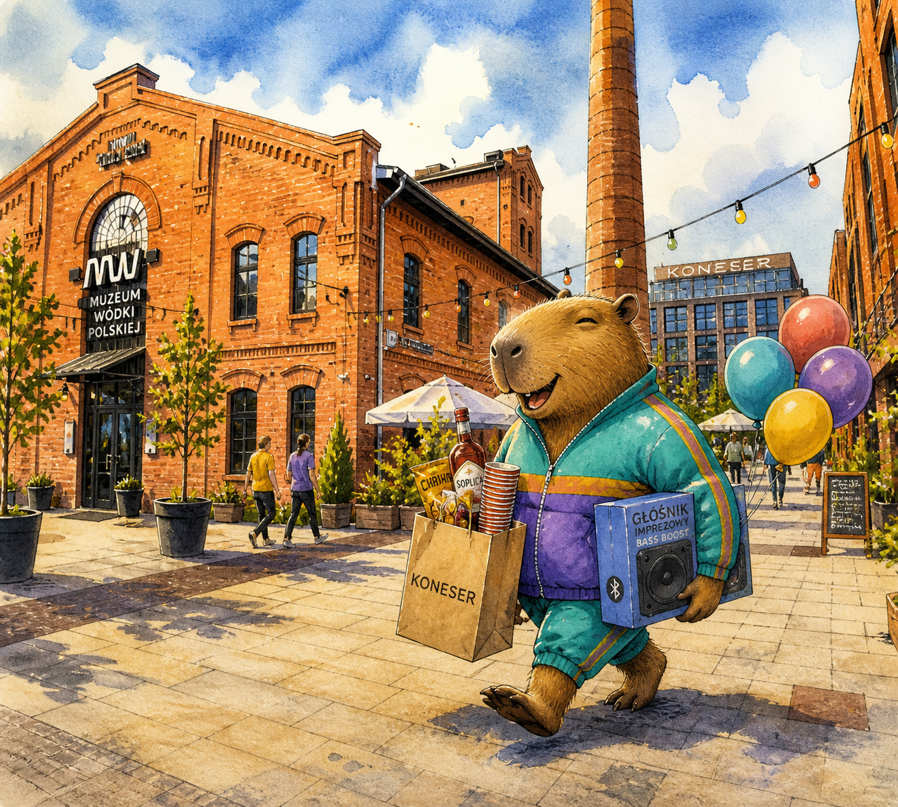
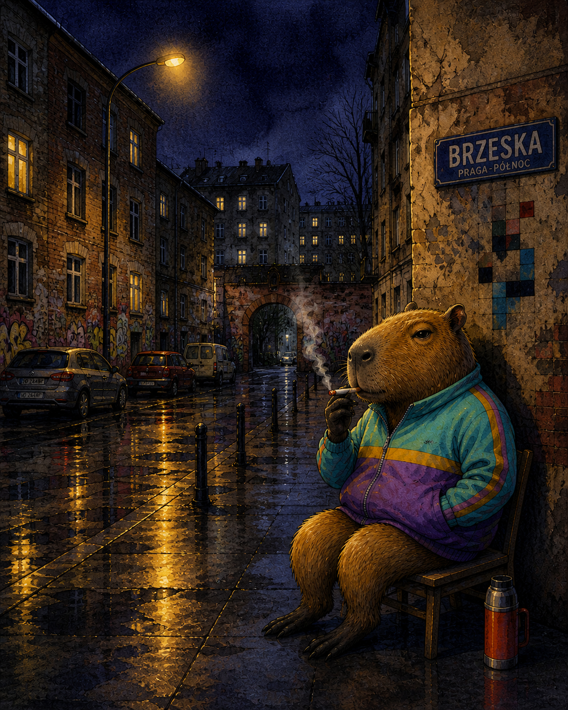

Sobota, 20 czerwca.
od dziewiętnastej, do śniadania
- Adres
- ul. Kijowska 17/3
- Wejście
- brama 2 · klatka 2 · 2. piętro
- Tramwaj
- 3 · 6 · 26 → "Bazylika"
- Domofon
- kapryśny — dzwoń na komórkę
- Dress code
- wygodnie, w skarpetkach
- RSVP
- do 15 czerwca

Po dwóch latach spędzonych w pokoju czternaście metrów kwadratowych — z widokiem na klatkę schodową, prysznicem w przedsionku i sąsiadem grającym Cohena o czwartej rano — mam wreszcie własne cztery ściany. Nie jest to mieszkanie, w którym wszystko działa. Domofon na przykład działa tylko czasem. Klucz do bramy lubi się zaciąć. Pod tapetą znaleźliśmy gazetę z 1973 roku z reklamą lodówki marki "Mińsk". Ale jest nasze.
Mieszkam na Szmulkach. Ta cześć Pragi-Północ, której jeszcze nie zdążyli wyremontować na biura. Bazylika Najświętszego Serca dzwoni o szóstej i o szesnastej. Bazar Różyckiego wciąż stoi, choć z każdym rokiem coraz ciszej. A obok mnie, dosłownie po sąsiedzku — Jamnik: pięćset osiem metrów bloku przy Kijowskiej 11, najdłuższy w Warszawie. Mieszka w nim mniej więcej tyle ludzi, co w średniej polskiej wsi. Sąsiedzi z trzeciej klatki nigdy nie spotkali sąsiadów z jedenastej.
Wpadnij. Drugie podwórko, druga klatka, drugie piętro. Jeśli domofon zachowa się kapryśnie — pomijaj go i dzwoń na komórkę. Otwarte od dziewiętnastej, do śniadania.
od dziewiętnastej, do śniadania
images/middle-1.pngJak masz pół godziny przed dziewiętnastą — wpadnij na Bazar Różyckiego po pyzy z flakami; albo zajrzyj do Chmurów na 11 Listopada, na piwo na pinkowym stołku w bramie. Jeśli złota godzina trafi się dobrze, idź pod Sobór św. Marii Magdaleny popatrzeć jak słońce schodzi po cebulastych kopułach. A potem przejdź na piechotę przez Targową na Szmulki — tam już nie ma muzeów wódki, są tylko prawdziwe podwórka, prawdziwe kapliczki i mój Jamnik.
images/middle-2.pngKlasyczna parapetówka kończy się trzema identycznymi deskami do krojenia. Spróbujmy tym razem inaczej. Zaklep co przynosisz — bez logowania, bez maili, bez ceremonii. Zmienisz zdanie — zaklep z powrotem.
Ciężka jak sumienie. Przeżyje gospodarza i prawdopodobnie tę kamienicę.
~ 280 złMartę.
~ 80 złWymaga światła i cierpliwości. Mam jedno i drugie tylko czasem.
~ 120 złNa wieczory szmulkowskie, kiedy ogrzewanie nie nadąża.
~ 200 złTradycja. Klucz do dobrobytu i zwykłego smaku.
~ 25 złBo na Bazarze są papryczki, a ja nie wiem co z nimi robić.
~ 150 złNalewka babci, książka, której nie chcesz mieć drugi raz, doniczka z czymś żywym. Cokolwiek.
— bezcenneimages/middle-3.png
04:00
Ostatnie pierogi w lodówce. Termos został w bramie. Brzeska nie pozuje — Brzeska tylko patrzy.
Emil